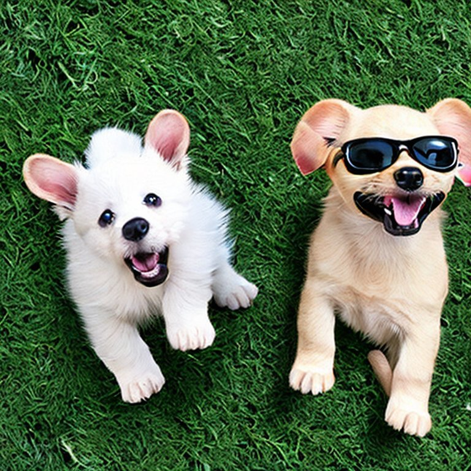

일관된 훈련과 규칙 설정
유대감을 형성하려면 신뢰와 애정을 바탕으로 강아지와의 관계를 발전시키는 것이 필요하다.강아지는 일관된 규칙과 명령을 통해 안전감을 느낍니다. 모든 가족 구성원이 동일한 명령어와 훈련 방법을 사용해야 한다.

일관성 유지:
- 일관성 유지와 긍정적인 강화
강아지는 일관된 규칙과 명령을 통해 안전감을 느낍니다. 모든 가족 구성원이 동일한 명령어와 훈련 방법을 사용해야 한다.
- 함께 시간을 보내기
정기적인 산책과 운동은 강아지와 주인 사이의 유대를 강화합니다. 산책 중에는 강아지의 리드를 따르고, 다양한 환경을 경험하게 한다.공 던지기, 숨바꼭질, 터그 오브 워 등의 놀이를 통해 강아지와 함께 시간을 보낸다. 놀이를 통해 스트레스를 해소하고, 신체적, 정신적 자극을 제공한다.
- 신뢰와 안전감 제공
강아지가 안전하다고 느낄 수 있는 환경을 제공한다. 강아지의 침대나 케이지를 편안하게 꾸미고, 혼자 있는 시간에도 안전하게 지낼 수 있도록 한다. 강아지가 스트레스를 받지 않도록 주의하다. 강아지가 불안해하거나 스트레스를 받을 때는 차분하고 안정적인 태도로 대한다
강아지와의 유대감 형성은 시간과 노력이 필요하지만, 이러한 노력이 쌓여 깊고 신뢰할 수 있는 관계가 만들어진다. 꾸준히 관심을 가지고 사랑을 주며, 강아지와 함께하는 시간을 소중히 여기면 더욱 견고한 유대감을 형성할 수 있다.